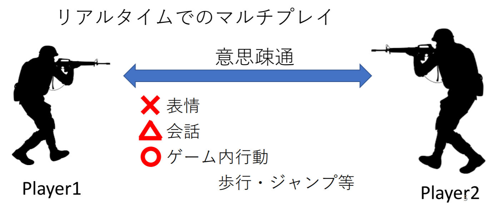
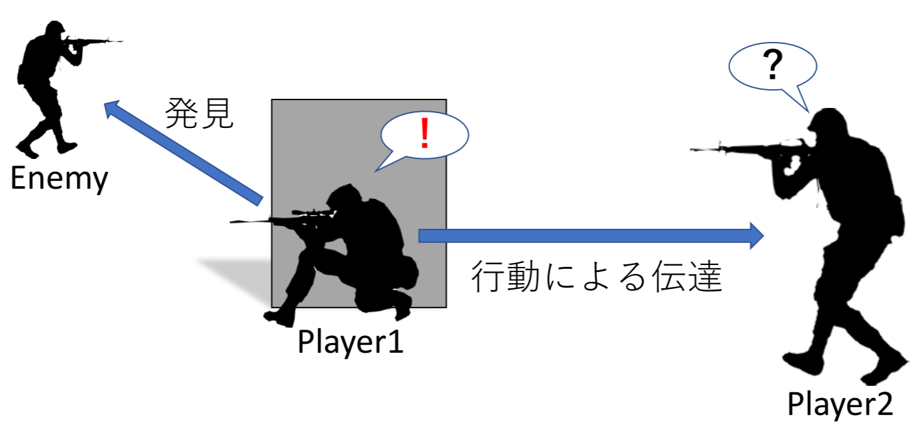
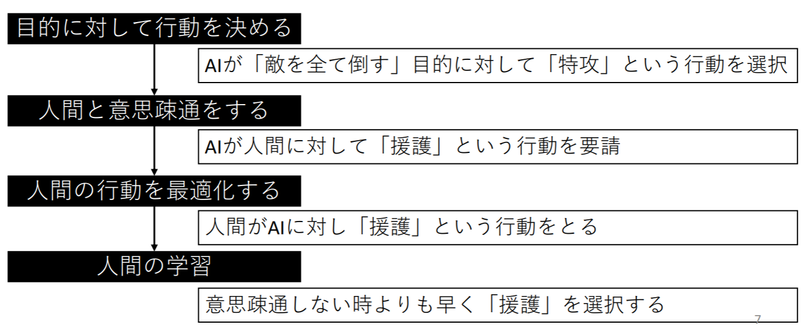

こんにちは,私の名前は『山田直央』と言います.
ご挨拶
こんにちは,私の名前は『山田直央』と言います.
このページは,自己紹介をしたり,私の得た知見・作成したプログラム・作った2D/3D作品を紹介するページです.
山田直央の現在
北陸先端科学技術大学院大学を2022年3月卒業予定の 修士学生です.
私は北陸先端科学技術大学院大学で,情報技術の取り扱い等を主に勉強しています.
現在の研究について
池田研で 「人間の行動を誘導するゲームAI」の研究をしています．
近年，ゲームに対する人々の注目度が上がり，eスポーツなどに代表されるように，ゲーム市場の拡大が進んでいます． 特に，通信技術の向上により，リアルタイムでのマルチオンラインゲームが多くでてきました．（PUBG・APEXなど）
その中で自分はFPSのゲーム中で散見されるプレイヤの無言のコミュニケーションに注目しました．
マルチオンラインのFPSのプレイヤはより高い勝利点をもぎ取るために，チーム内で連携をすることが要求されます． しかし，たいていのゲームでは人間同士の表情を対象に送ることができないし，またゲーム内チャットをしたくない・できない プレイヤがチーム内に入ってくることもあります．
そんな中でも，プレイヤはゲーム内に設定されている行動のみで，互いにコミュニケーションを取り， 連携をとります．
例えば，下の図のように，Player1がEnemyを見つけた時，Player1は「壁に隠れる行動」・「しゃがみ行動」・「罠を仕掛け始める行動」等をします． この行動をみたPlayer2はその行動を不審に考え，「警戒行動」を行います．
Player1がPlayer2に意思疎通するためにこれらの行動を起こしたのかについては言及しませんが， 少なくとも，Player1の行動によってPlayer2の行動が誘導されたのは確かです．
これと同様に，機械の行動（意思疎通）によって人間の行動を誘導できないか，というのが自分の研究の趣旨です．
次の図のように最初に機械側が目的（勝利点）に対する最適な行動を予測し，それを人間に対し誘導（意思疎通）し，人間の行動を誘導します． この三つを何度も繰り返すことで，やがて人間は機械側が誘導しなくても，人間自身が学習し自分で最適な行動を選択するようになるのではないかということです．
これから二年間の研究で，このテーマに対する研究を進めていこうと考えています．
制作物について
東京工業大学ではデジタル創作同好会traPというサークルで活動をしていましたが, このページはそこので得た知見が大半を占めています．大学3年生からの制作物を載せています．これからも更新していくつもりです．